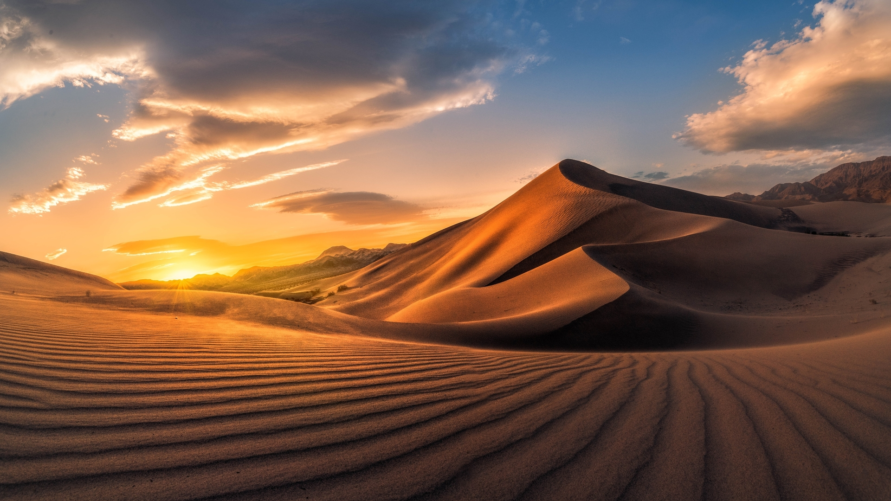
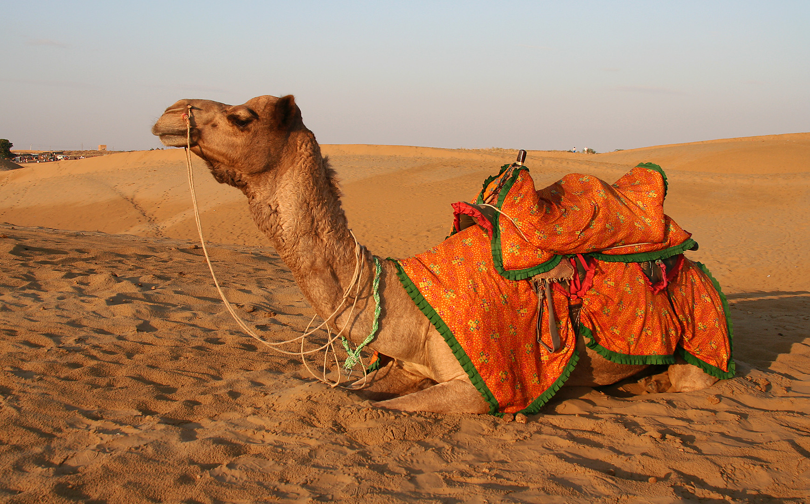

- 
-

- 

Jaisalmer is a prominent tourist spot located in the northwestern state of Rajasthan in India. It is known as the 'golden city' due to its golden dunes and castles clad in golden honey sandstone. Jaisalmer is adorned with lakes, ornate Jain temples and havelis. Climb onto the camel saddle and make your way through this desert to camp under the starry night sky for an unforgettable experience. Read More...

When we read about deserts in our school books, didn’t we picture a desert as a never-ending land of golden sand? Here in India, you get a white one too! Located in the state of Gujarat, the Great Rann of Kutch comprises the largest salt plain in the country and is often called the white salt desert. When the temperature drops, the desert transforms into this vibrant and colourful place, waiting just for you to come and experience it all.
Read More...
The Cold Desert Cultural Landscape of India is situated in the Himalayas and stretches from Ladakh (in the state of Jammu and Kashmir, or J&K) in the north to Kinnaur (in the state of Himachal Pradesh, or H.P.) in the south. A picturesque paradise echoing with tranquillity and spirituality, Spiti Valley is home to several Buddhist monasteries and stunning natural sites, most of which are unexplored and hence, unspoilt. Read More...

The landscape of Ladakh, together with its unique Tibetan Buddhist culture, is diverse and full of surprises, and perfectly suited for trying out various activities, from adventure to sightseeing. Honeymoon couples, solo travellers, adventure junkies, tourism in Ladakh offers a wide range of activities for each of them. From adventure based activities like trekking, mountaineering & river rafting to enjoying homestays or exploring the wildlife, there is plenty that this part of India offers for travellers.
Read More...
Jodhpur is the second-largest city in the Indian state of Rajasthan featuring many palaces, forts, and temples, set in the stark landscape of the Thar Desert. It is popularly known as the "Blue City" among people of Rajasthan and all over India.
Read More...
Aptly called the “Camel City”, Bikaner offers a truly grandiose experience of sandy deserts in India. It lies some 330 km from Jaipur amid the undulating sandhills of the Thar desert. Bikaner derives its name from Rao Bikaji, a Rathore King who established this city in 1488. The city is renowned for its red sandstone forts, beautiful desert vistas and unforgettable camel safari experiences.
Read More...